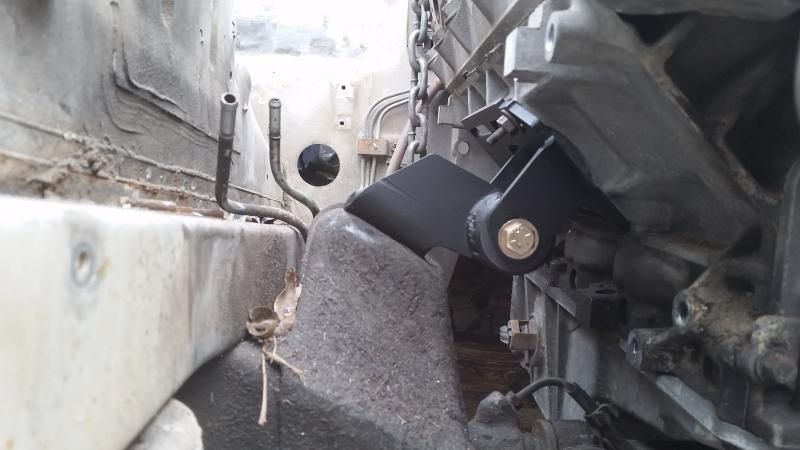

-
That is a fantastic looking motor mount. How far off of the steering rack, does the oil pan sit with these mounts? I set my engine with oil pan on 1/8" steel plate, on top of the steering rack, then built my motor mounts off of that. Just curious how high the engine sits if the next set will drop it a full 3/4".
Also, how far back does the engine sit? Where is the oil pressure sensor on the back top of the block, in relation to the firewall? I know I have mine crammed as far back as I could reasonably get it.
EDIT: Actually, I can see it in one of the pics. Looks like it is sitting fairly high. About 1.5-2" above steering rack? Do you guys have any hood clearance issues? Still looks like it would clear everything just fine. But hard to tell until hood is on.85 Z31 6.0 LSX turbo 766whp/792wtq
04 GTO, LS6, big cam, porting, N20… underway for summertime daily driver. -
Thanks for the complement on the mounts John.Originally posted by SATAN View Post
The new set will likely be lowering the the engine another 3/4 of an inch. The end goal is to leave about 3/8 of an inch clearance between the unmodified Camaro oil pan and the top of the P/S rack/crossmember. As far as the sump section of the oil pan its about 1/8 from the P/S rack. Even with this (higher 1st set/prototypes) there is a pretty good amount of clearance between the intake manifold and hood. Here's some pics
This is all the way back oil pan to crossmemeber clearance
This is all the way forward
Here in this pic the engine is all the way back. This is a dirty ass Map sensor on a Ls1 intake manifold. As you can see its very close to the seam on the firewall. So hopefully that will give you a idea of location the oil pressure sensor(in stock location)
Here's the position of the Right(passenger side) head in relation to the firewall when the engine is all the way back.
Then here's the position of the Left( Driver side) head in relation to the firewall when the engine is all the way back.
Sorry I don't have a pic of the hood clearance at the moment, but there's plenty of clearance with the Ls1/Ls6 intake manifold. Once I get the revised set of mounts I will take plenty of pics and report back to update the progress of these mounts. With the engine all the way back there may be some transmission tunnel modification/ massaging that will be needed. It's hard to say considering there's been 5 or so of us that have done/are doing this swap and we all used different transmissions.Originally posted by Racinjitter -
I can never go back riding in a poorly insulated z with no a/c in south Florida weather. But Looks like there is enough head room for a whipple charger which I hope leaves the room for adapting an GM ac compressor, relocating the battery and route some new ac lines in it's place. Now were to find all the money to fund this.....Own:
1986 Z31 2+0 Turbo GLL ---- spearco IC ,3" exhaust, Poly everything with solid subframe and diff mounts, HX35/40 Holset Turbo, CLSD, Nistune with 1220cc FIC injectors on E85.
1993 Jeep Cherokee 4X4
Owned:
1995 Z32 2+0 NA Black
1985 Z31 2+0 turbo Black
1986 Z31 2+0 NA Red
1988 Z31 2+2 NA Auto
1988 Z31 2+0 Turbo White ---- Stripped for all of its goodies.
1984 Z31 2+0 turbo Brown
1985 Z31 2+0 NA Black
2003 Nissan frontier D22 supercharded vg33e 4x4 -
Just wondering will you let us know when they go on sale or should I just keep an eye out on dirty dingos site ?1999 jeep Cherokee ome lift, JK rubicons on 265/70 general grabbers, rust and some other crap bolted to it wheeler/dailydriver/partshauler/camper
1987 z31 2+2 5.3 lsx t56 swap in progress and some other things that im to lazy to type in -
I will most definitely be keeping you guys posted of any changes that are made and when they go on sale. Just bear with me lolOriginally posted by 530zx View PostOriginally posted by Racinjitter -
Ok cool, Sorry if im a Pain lol just getting souped about getting my car done.1999 jeep Cherokee ome lift, JK rubicons on 265/70 general grabbers, rust and some other crap bolted to it wheeler/dailydriver/partshauler/camper
1987 z31 2+2 5.3 lsx t56 swap in progress and some other things that im to lazy to type in -
Yeah you and I both man. It's been a long process but we are almost at the finish line. Originally posted by Racinjitter
Originally posted by Racinjitter -
did these ever go into production -
I was just notified as of 5:30PM central time. I should be receiving the final/revised version of the mounts sometime early next week. As soon as they arrive I'll be test fitting them. If all is well the 1st batch of the revised mounts will be ready/on sale about a month after next week(Due to the fact they must be made. Then a portion of the mounts will have the available coating applied). Unfortunately the holidays had really slowed our progress down dramatically. But we're back on track. So as before, please bear with me. This is still happening I promise.Originally posted by Racinjitter -
i am assuming these are designed using an N/A crossmember? -
Please review post#15. But yes it was designed around a N/A crossmember.Originally posted by liladairOriginally posted by Racinjitter -
All right guys here's a major update! So I received the revised mounts on Saturday 1/10/15 but wasn't home to sign for them . Today 1/13/15 was the soonest I could make to the post office to pick them up (had work). I installed them and everything fit perfect! So contacted Dirty Dingo to let them know the great news. As of 1:04PM Central time today 1/13/15. They have started production of the Bolt in LSX mounts for the Z31!!!!!!!! They will go sale in about 4 weeks. Keep your eyes peeled here www.http://www.dirtydingo.com/store/index.php or here https://www.facebook.com/DirtyDingoMotorsports for when the mounts hit the shelf. The revised mounts have lowered the engine another 3/4 of an inch. With the engine all the way forward there is 2 7/8in of clearance between the throttle body and hood. Now for some pics.
. Today 1/13/15 was the soonest I could make to the post office to pick them up (had work). I installed them and everything fit perfect! So contacted Dirty Dingo to let them know the great news. As of 1:04PM Central time today 1/13/15. They have started production of the Bolt in LSX mounts for the Z31!!!!!!!! They will go sale in about 4 weeks. Keep your eyes peeled here www.http://www.dirtydingo.com/store/index.php or here https://www.facebook.com/DirtyDingoMotorsports for when the mounts hit the shelf. The revised mounts have lowered the engine another 3/4 of an inch. With the engine all the way forward there is 2 7/8in of clearance between the throttle body and hood. Now for some pics.
Revised mounts
Revised mounts installed


TB clearance
New oil pan Clearance before and after
Revised mount
Prototype mount
Originally posted by Racinjitter -
Sweet, glad to see some aftermarket for our cars! Looks like a quality part too… -
Wooooot!"Its the s12's sexy over weight step daughter, the z31" -
Looks good. Awesome collaboration86na - BlueZ
Shiro #366 - Kouki Monster
85t - Mr Tickles

Copyright © 2006–. All rights reserved. Privacy Policy